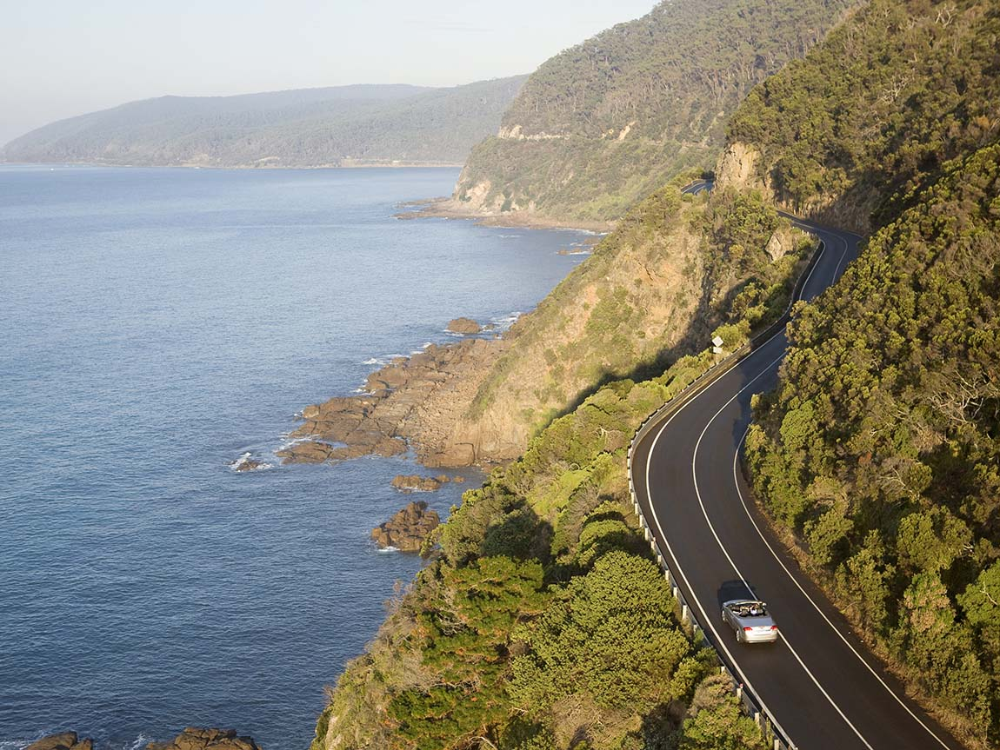

Pour commencer notre voyage nous partons à la découverte de la Great Ocean Road. Cette route mythique qui longe le littoral entre Portland et Melbourne. Des centaines de kilomètres avec des paysages à couper le souffle et quelques arrêts incontournables comme les fameux 12 apôtres.

Great Ocean Road
Les 12 Apôtres
Ensuite nous sommes allés au mythique Uluru aussi appelé Ayers Rock, il est probablement le site les plus célèbre d’Australie. Situé dans le Centre Rouge, cet immense rocher est un symbole du pays mais aussi de l’histoire aborigène du Territoire du Nord. Une des caractéristiques d’Uluru est son changement de couleurs en fonction de la lumière au fil de la journée, virant au rouge intense au coucher du soleil. Le rocher est un lieu sacré pour les aborigènes.
Le Uluru
Pour continuer notre voyage nous avons découvert la Grande barrière de corail. La Grande Barrière de Corail, inscrite au patrimoine mondial, s’étend sur plus de 2000 kilomètres dans l’Océan Pacifique, et descend le long de la côte Est du Queensland. C’est le récif le plus étendu au monde, il commence légèrement au Sud du Tropique du Capricorne à Bundaberg et se termine dans le détroit de Torres au Cape York. Comptant 2 900 récifs et 900 îles, ce massif corallien est considéré comme le plus grand organisme vivant de la terre et le seul visible de l’espace.
Grande barrière de corail
Pour terminer notre magnifique voyage L’opéra de Sydney est l’une des œuvres architecturales les plus célèbres et les plus belles du XXe siècle. C’est aussi l’un des centres culturels les plus dynamiques du monde. Pourtant, personne n’y croyait… Retour sur un rêve qui devint le cauchemar de son architecte, Jørn Utzon.